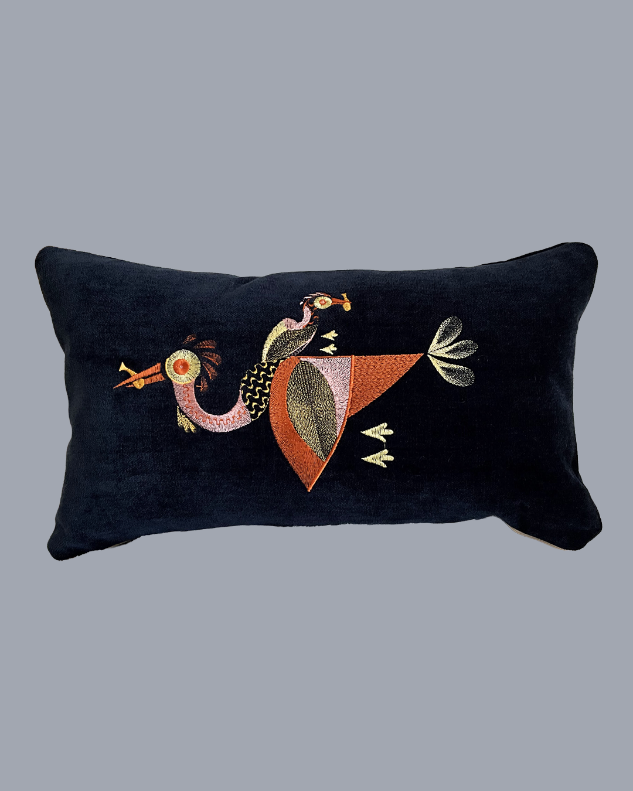

01 / CUSHION COVER
Embroidered Bird
— Navy Blue
£45
An original embroidered bird illustration stitched onto rich navy upholstery fabric. Finished with contrasting orange piping and a concealed zip.
- SIZE
- 50 × 30 cm
- MATERIAL
- Upholstery fabric
- FINISH
- Concealed zip · orange piping
- MADE
- Handmade in London